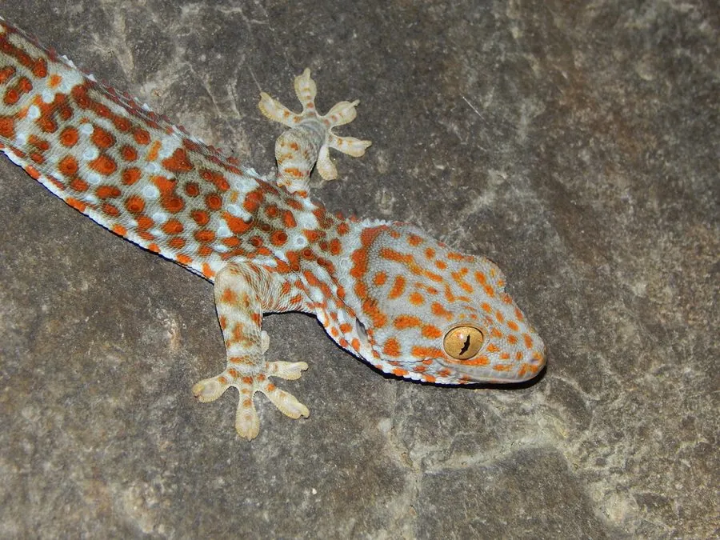

爬行动物 · 动物界
大壁虎 Gekko gecko

体型最大的壁虎之一，叫声似“蛤蚧”，中药蛤蚧即其干制品，野生种群因被大量捕捉而下降，被列为国家二级保护动物。
- 分类
- 门脊索动物门纲爬行纲目有鳞目科壁虎科属壁虎属
- 栖息环境
- 石灰岩洞穴、岩壁缝隙、树洞及老旧建筑
- 地理分布
- 中国广西、云南、广东、海南、福建等地及东南亚、南亚
- 保护级别
- IUCN 无危（LC）；中国国家二级保护动物
物种志
大壁虎体长 30–40 厘米，是体型最大的壁虎类之一。它头部较大，吻端钝圆，体色多为灰蓝或青灰色，背部和四肢散布砖红色或橙黄色斑点，尾部有深浅相间的环纹；脚趾末端有吸盘状皮褶，可在墙面和树干上攀爬；受到惊扰时张开口腔，露出暗紫色口腔与牙齿威吓对方。
它分布于南亚、东南亚及中国华南地区，栖息于石灰岩洞穴、岩壁、树洞和废弃房屋，多在夜间活动，以昆虫、蜘蛛和小型蜥蜴为食，叫声洪亮，因“蛤蚧”之声而得名。雌壁虎每次产卵 2 枚，卵壳钙化坚硬，常粘附在岩壁或缝隙中，孵化期约 70–100 天，幼体孵出后即可独立生活。因其干制品入药被大量捕捉，加上洞穴环境破坏，野生大壁虎数量锐减，中国已将其列为国家二级保护动物，禁止非法捕捉和交易。
形态与习性
- 食性昆虫、蜘蛛及小型蜥蜴
- 体长全长 30–40 cm
- 体重约 50–100 g
- 寿命约 10–20 年
- 繁殖卵生，每次 2 枚，孵化期 70–100 天
- 活动节律夜行性，白天藏于岩缝洞穴
- 防御张口威吓，可咬人但无毒
趣味知识
- “蛤蚧”这个名字来自它响亮的叫声，听起来像在喊“蛤蚧”。
- 大壁虎会将硬壳卵粘在岩壁缝里，母体有时守在附近。
- 它断掉的尾巴能再生，但再生的尾巴结构较为粗糙。